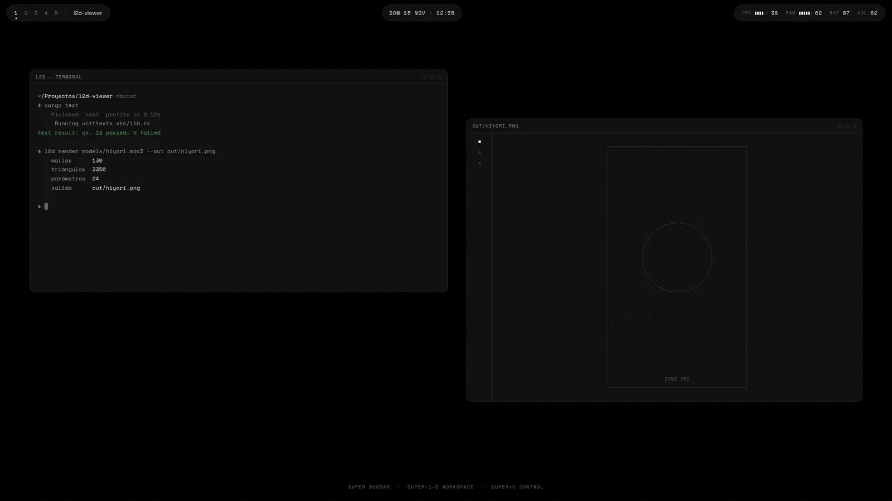
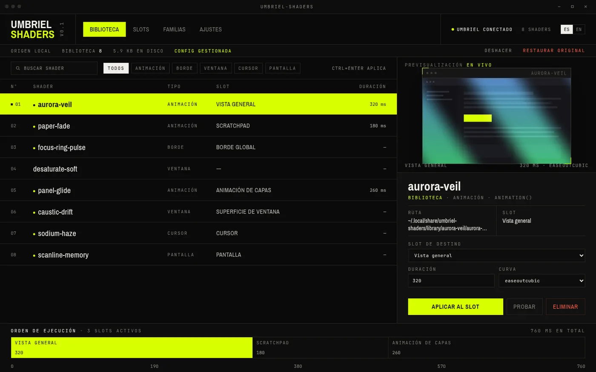
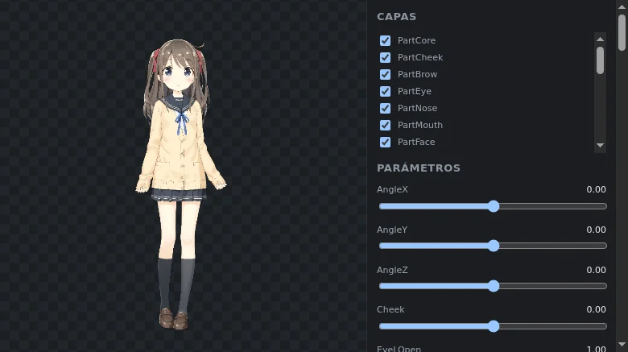
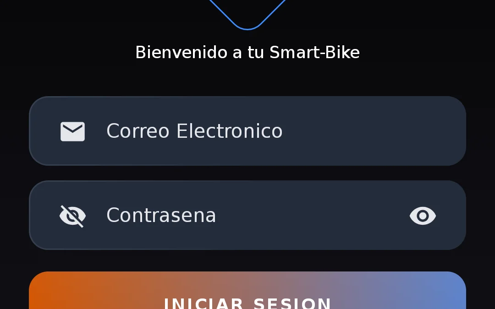
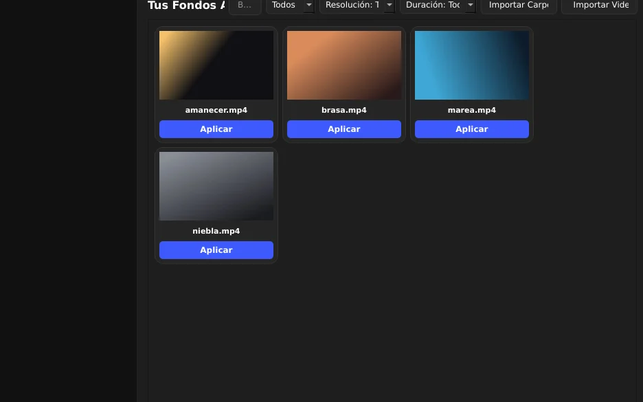
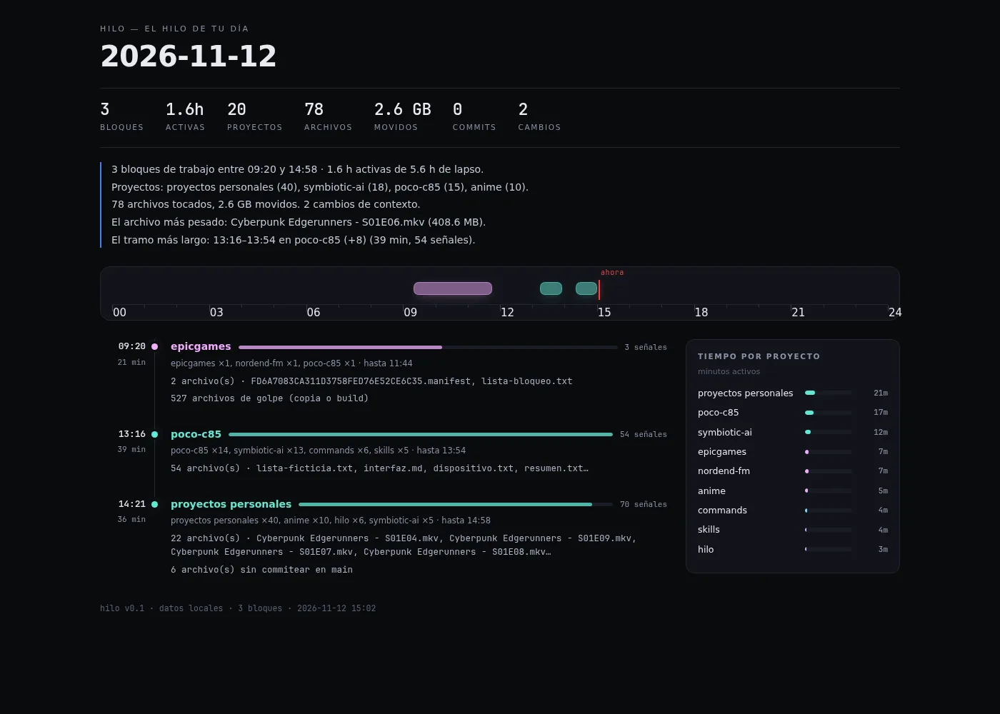
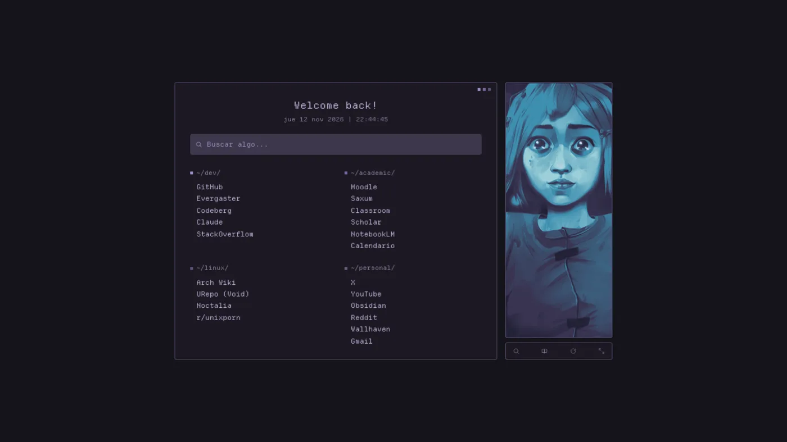
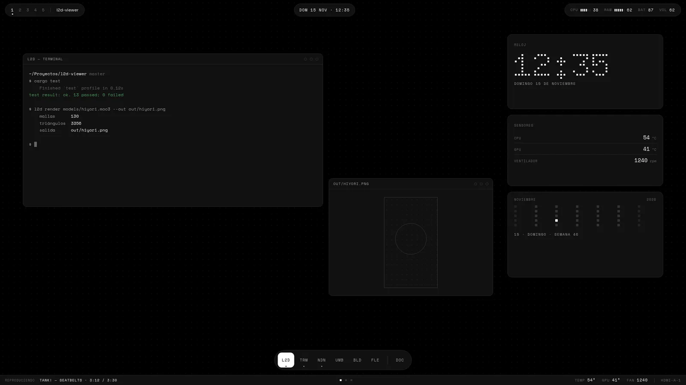
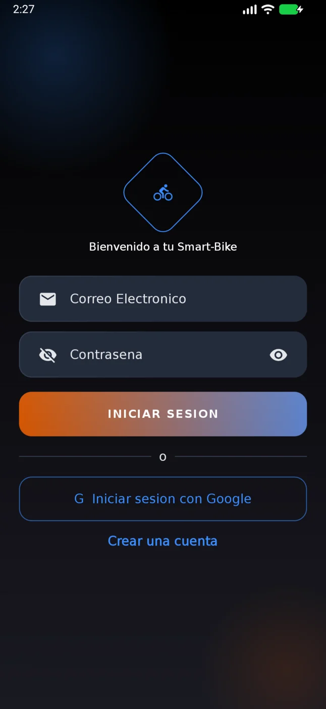
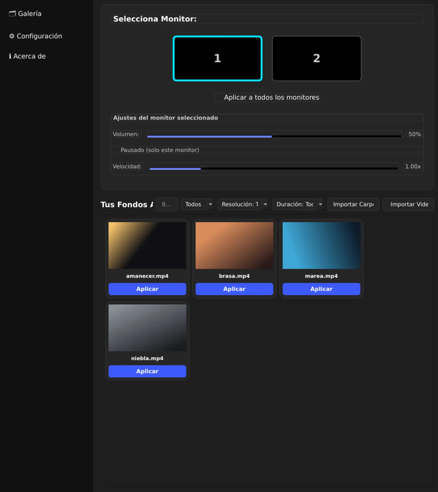

Sistemas · Rust
nd-shell
Nueve superficies en un solo daemon: barra por monitor, isla, overview, centro de control, OSD, dock, widgets, notificaciones y ajustes.
v1 cerrada · 145 pruebas
Rust · Wayland · Linux · gráficos
Soy Everardo García Romero. Mantengo un shell de escritorio completo en Rust, reconstruyo formatos binarios desde cero y empaqueto lo que uso todos los días. Nada de lo que hay aquí es una maqueta: corre en esta máquina, con el sistema real detrás.
Void / CachyOS · Wayland · compositor Umbriel
01 / Trabajo
Cada ficha dice qué funciona, qué no y por qué se eligió así. Los números salen del código, no de una diapositiva.
11 proyectos visibles

Sistemas · Rust
Nueve superficies en un solo daemon: barra por monitor, isla, overview, centro de control, OSD, dock, widgets, notificaciones y ajustes.

Apps de escritorio · Tauri
Biblioteca local de shaders para el compositor Umbriel: explora, previsualiza en WebGL y aplica el efecto sin editar config.toml a mano.

Gráficos · Rust
Lector de .moc3 y visor de modelos Live2D escritos desde cero en Rust, con rasterizador propio. No es un port del editor.

Aplicaciones · Android
App Android para gestionar una moto: telemetría en vivo, encendido remoto, GPS sobre OpenStreetMap y mantenimiento predictivo, con un ESP32 detrás.

Aplicaciones · Wayland
Gestor de fondos animados para Wayland: un video por monitor, pausa cuando hay ventanas maximizadas y se apaga solo si estás con batería.

Herramientas · Python
Reconstruye tu día con lo que la máquina ya deja (archivos tocados, commits, comandos) y lo dibuja como bloques de trabajo.
Herramientas · Python
Controla los audífonos Nothing/CMF desde la terminal por Bluetooth Classic: ANC, EQ de 8 bandas y audio espacial, con cada escritura verificada de vuelta.
Herramientas · Rust
La distribución de Poisson en 99 líneas de Rust, sin dependencias: λ y n por teclado, la fórmula a la vista y el resultado con su factorial calculado a mano.
Apps de escritorio · QML
Ocho plugins para el escritorio: espejo de pantalla, control de audífonos Nothing, mascota que sigue tu temporizador, batería, reloj y clima.

Herramientas · CSS
Página de inicio que toma los colores de la paleta activa del escritorio: la plantilla escribe las variables y la página cambia sola.
Herramientas · TypeScript
Ejercicio de Clean Code, SOLID y TDD con reglas de negocio componibles, cero dependencias y pruebas que se corren sin instalar nada.
02 / Código abierto
Reportes con causa raíz encontrada, no capturas de pantalla. Y empaquetado que compila en cuatro distros.
2026-11
Los AppImage no arrancaban y el u+x no era la causa: el runtime de AppImage es un static-PIE sin PT_INTERP y la comprobación de contenido lo tomaba por biblioteca. Dejé la cadena completa y el parche propuesto, verificado en los cuatro AppImage del equipo.
2026-11
Actualizaciones del compositor Umbriel y su portal para los paquetes de Void: dos commits por plantilla, checksums descargados y verificados, y CI en verde en Alpine, Arch, Chimera y Void.
2026-11
Un toggle de «ejecutar como programa» que faltaba: fundamentado línea por línea en el código real (browser.cpp, info_pane.cpp, launcher.hpp), con la entrada de menú contextual incluida.
2026-10
Ocho plugins publicados con su catalog.toml e ids estables, licencia MIT. El espejo de pantalla y el control de audífonos Nothing son los que más uso.
03 / Método
Todos los proyectos de arriba comparten la misma regla: nada se documenta sin
evidencia. Si digo que la barra lee el 82 % de brillo, lo leí de sysfs
y lo comparé con la captura. Si el volumen del panel dice 58 %, wpctl dice 58 %.
Cuando algo no se puede resolver, se reporta. El selector de brillo externo por DDC/CI tarda 100–300 ms por escritura, así que aplica al soltar y no al arrastrar; el overview no agrupa ventanas por workspace porque ningún protocolo dice en qué workspace vive cada una. Eso está escrito en el código, no escondido.
Estudio ingeniería en México. Mantengo este escritorio (Wayland, compositor Umbriel y un shell propio) porque es la única forma de encontrar los errores que de verdad importan.
04 / Contacto
Abierto a colaborar en herramientas de escritorio, Rust, Wayland y gráficos. También acepto preguntas sobre cualquier informe: todos los límites están escritos.

wlr-layer-shell, no en el navegador.Sistemas · Rust · Wayland
Nueve superficies que sustituyen barra, launcher, overview, panel de control, OSD, dock, widgets, notificaciones y ajustes. Un solo proceso, un socket Unix para gobernarlo y cero GTK.
config.toml y se recarga por inotify: los cambios se ven en menos de un segundo, sin reiniciar.toml_edit, así que conserva comentarios y claves ajenas byte a byte en vez de destruir la config.wgpu al crear una superficie ya no deja el escritorio sin barra: se reintenta hasta tres veces y, si se rinde, sale con código 1 para que un supervisor lo vea.firefox ↔ org.mozilla.firefox) y tiene pruebas de lo que no debe coincidir.Acciones e iconos en las notificaciones, menús por salida sin foco y el motor de título por ventana (Umbriel no publica qué ventana está activa, así que ahí no dibuja nada en vez de mentir).
Apps de escritorio · Tauri 2 · WebGL
Una app de escritorio para explorar los shaders del compositor Umbriel, verlos antes de aplicarlos y colocarlos en sus slots. Sin editar config.toml a mano y sin romper la configuración.
umbriel config validate; si el compositor no lo acepta, la app deshace sola.config-replace ni reiniciar la sesión.~/.local (Void, Arch, Debian).Gráficos · Rust · formatos binarios
Una implementación independiente del formato y del comportamiento de Live2D, escrita en Rust. No es un port: no contiene una línea del editor original.
.moc3 coincide con py-moc3 en ids, conteos y offsets sobre los ocho modelos de muestra del SDK.0x40, sin relleno: la spec comunitaria (0x2C0 + relleno) no servía contra los archivos reales.El motor de keyforms completo (el índice es un radix mixto sobre bandas y ninguna de las tres fórmulas probadas acierta en todas las mallas) y los deformadores. Está documentado con precisión en docs/.
l2dhilo con datos reales de un día: 3 bloques, 1.6 h activas, 78 archivos.Herramientas · Python · local-first
Un prototipo que arma la historia de tu jornada a partir de las señales que la máquina ya deja: archivos tocados, commits y comandos. Todo queda en un SQLite local, con la stdlib y nada más.
~/.local/share/hilo/hilo.db (SQLite y la stdlib): el dato no sale de la máquina.hilo today · hilo serve · hilo demoApps de escritorio · QML · plugins
Un repositorio con ocho plugins para Noctalia, publicados con ids estables y catálogo propio: del espejo de pantalla al control de audífonos Nothing.
wl-mirror desde un widget de la barra.opennothing.catalog.toml para que el gestor de plugins los lea sin rutas frágiles.Herramientas · HTML · CSS
Una página de inicio minimalista que hereda los colores de la paleta activa de Noctalia. Cuando cambias de tema en el escritorio, la página cambia sola.
colors.css; la página solo consume variables. Cero JavaScript para el tema.Herramientas · TypeScript · TDD
Un ejercicio deliberado de Clean Code, SOLID y TDD: un carrito que calcula su precio final con descuentos e impuestos componibles, sin dependencias.
node:test y modo watch; el ejemplo imprime el desglose completo del checkout.if: cada descuento e impuesto es una pieza aparte.node examples/checkout.ts · npm testHerramientas · Python · Bluetooth
Controla tus audífonos Nothing/CMF desde la terminal hablando directo por Bluetooth Classic (SPP/RFCOMM), sin nube y con el teléfono fuera del camino.
ack y se vuelve a leer (readback): si el ajuste no se aplicó, lo sabes.ScriptedTransport: el protocolo y la sesión se prueban sin Bluetooth ni hardware.espeon).El repositorio declara MIT en pyproject.toml pero todavía no tiene el archivo LICENSE. Y esta ficha no lleva captura porque el CLI no se puede fotografiar sin los audífonos conectados.

Aplicaciones · Android · IoT
Una app Android nativa para monitorear y controlar una motocicleta: telemetría, encendido remoto, rastreo GPS y mantenimiento, con un ESP32 como cerebro a bordo.
data/, domain/, presentation/.EncryptedSharedPreferences (AES-256) y caché offline en Room para funcionar sin red.No hay APK publicada ni capturas en el repositorio, y sin el ESP32 y la API la app solo llega a la parte offline. Tampoco tiene pruebas automatizadas: la arquitectura está, la red de seguridad todavía no.

Aplicaciones · Python · Wayland
Un gestor de fondos animados para Wayland que pone un video distinto en cada monitor, con bandeja del sistema, biblioteca con miniaturas y frenos para no gastar recursos de más.
~/Videos/Komorebi y genera miniaturas con ffmpeg.Depende de libVLC, ffmpeg y de xprop/xrandr en Wayland + XWayland, y está probado en GNOME Shell, no en otros compositores. El repositorio todavía no tiene capturas ni pruebas.
Herramientas · Rust · matemáticas
La distribución de Poisson implementada a mano en Rust: λ y n se piden por teclado, el factorial se calcula con un bucle y el resultado sale con su probabilidad en porcentaje.
f64.Es un menú interactivo sin argumentos de línea de comandos y sin pruebas automatizadas. Para λ grandes el factorial en f64 se desborda: ahí haría falta log-gamma, y no está.